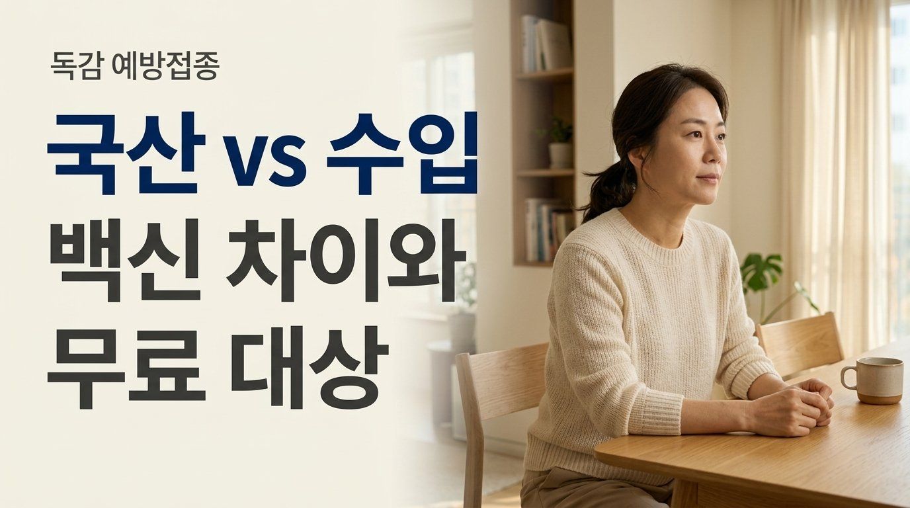
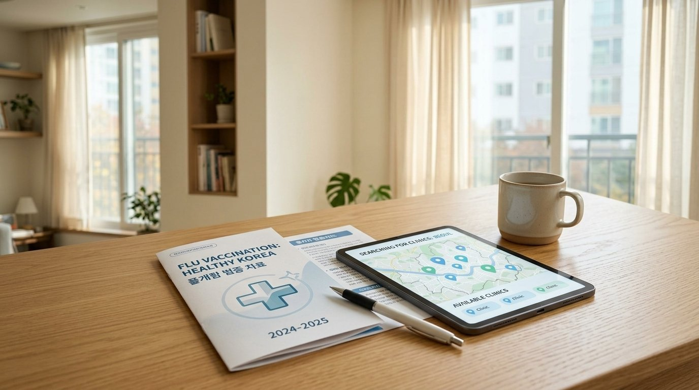

쌀쌀한 바람이 불어오면 가족들과 함께 독감 접종 백신 종류와 지원 대상을 챙겨보게 됩니다.
접수대 앞에 서면 "국산 백신으로 하실 건가요, 수입 백신으로 맞으실 건가요?"라는 질문을 받고 머뭇거리게 되지요.
만 원 넘게 차이 나는 주사 비용을 보며 수입산이 더 우수한 것은 아닐까 망설여지기도 합니다.
오늘 글에서는 두 제형의 실질적인 차이점과 달걀 알레르기 대처법, 그리고 알뜰한 일정까지 속 시원히 풀어드립니다.
| "수입 백신이 더 오래 머물까?" 두 제형의 솔직한 비교

흔히 수입 주사약이 몸살도 적고 방어력도 더 오래 지속될 것이라 여기는 시선이 많습니다.
보건당국의 출하 승인을 받은 제품들은 모두 세계보건기구가 지정한 표준 균주를 똑같이 표적으로 삼아 만들어집니다.
개별 제품끼리 일대일로 비교한 대규모 연구는 제한적이지만, 생산국 차이만으로 우열을 가르기는 어렵습니다.
몸속에서 방어선이 세워지는 데는 접종 후 2주 정도 걸리며, 약 5~6개월 동안 방어력이 유지되는 흐름은 서로 비슷합니다.
실제 방어 효과는 그해 유행하는 바이러스와 얼마나 잘 맞아떨어지는지, 개인의 기초 체력이 어떤지에 따라 좌우됩니다.
| 달걀 드시고 가려웠다면? 배양 방식부터 꼼꼼히 확인하세요


주사를 고르실 때 생산지보다 눈여겨보셔야 할 대목은 바이러스를 키워낸 배양 방식입니다.
대다수 주사제는 닭의 알을 바탕으로 증식시키는 전통적인 유정란 배양 방식을 택하고 있습니다.

평소 달걀을 드신 뒤 피부가 붉어지거나 가려운 적이 있다면 동물세포 무균 배양 백신이 훌륭한 대안이 됩니다.
세포 배양 제형은 계란 단백 성분을 배제하여 생산되므로 달걀 과민 체질도 부담을 덜고 선택하실 수 있습니다.
다만 백신에 첨가되는 보존제나 기타 성분에 민감할 수 있으므로, 과거 주사 후 불편했던 기억이 있다면 예진표에 적고 원장님과 상의하셔야 합니다.
| 지원 혜택과 접종비 편차! 10월 6일 오늘부터 시작된 일정표


일반 성인이 맞는 독감 주사는 공적 지원 혜택이 닿지 않는 비급여 항목으로 분류됩니다.
동네 의원마다 2만 5천 원 선부터 4만 5천 원 선까지 2배 가까이 편차가 나는 까닭도 접종처가 매입 비용과 관리 여건을 따져 스스로 정하기 때문입니다.
심평원 누리집이나 건강e음 앱에서 비급여 진료비 항목을 찾아보시면 주변 착한 의원의 접종비를 손쉽게 대조하실 수 있습니다.


나라에서 지원해 주는 국가지원 일정도 놓치지 마세요.
올해 국가 지원 백신은 세계보건기구 방침을 반영하여 3가 제형으로 전액 공급됩니다.
2회 접종 대상 어린이와 임신부는 지난 9월 21일부터 일찌감치 지원을 시작하였으며, 1회 접종 어린이는 9월 28일부터 맞고 있습니다.
오늘인 2026년 10월 6일부터는 75세 이상 어르신 접종이 열렸고, 70~74세는 10월 12일부터, 65~69세는 10월 15일부터 순서대로 열립니다.
어린이 혜택 연령도 생후 6개월부터 14세 중학교 2학년(2012년생)까지 넓어져 반가운 소식입니다.

2. 주사를 맞으신 뒤 30분간은 대기 공간에 머물며 몸 상태를 지켜보세요.
3. 뻐근한 느낌은 보통 2~3일 안에 풀리지만, 39도 이상의 열이 이어지면 진료진을 찾아주세요.

숨이 차거나 입술이 붓는 급성 과민 반응이 혹시라도 생기면 즉시 119를 부르고 응급 조치를 받으셔야 합니다.
꼼꼼하게 일정을 확인하셔서 올겨울 온 가족이 감기 걱정 없이 포근한 계절을 보내시길 응원합니다!
댓글로 소중한 경험과 나누고 싶은 이야기를 편하게 들려주세요! 🍯
자녀 독감 확진 시 해열 후 안심 격리 원칙과 확인서 발급 요령도 미리 챙겨두세요!
- 보건당국 국가건강정보포털: 2026-2027절기 인플루엔자 국가 지원 접종 지침
- 식품안전 보건당국: 계절인플루엔자백신 국가출하승인 및 허가 정보
- 보건당국 심사평가원: 비급여 진료비 정보 공시 제도 안내
- 감염병 관리 법령 제24조: 정기접종 조항